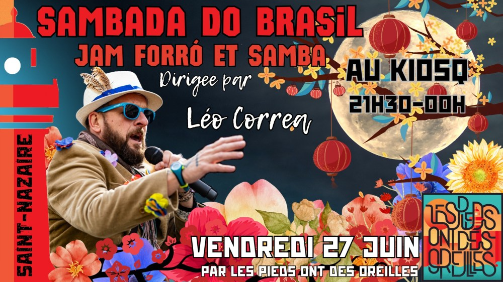

Sambada do brasil au Kiosq

Jam session et bal forró/samba ouvert aux musiciens de tout bord.
Dirigée par l’artiste brésilien Léo Corrêa.
Les musiciens interprètent les standards de forró et de samba, pendant que le public sirote un verre ou met le feu à la piste de danse.